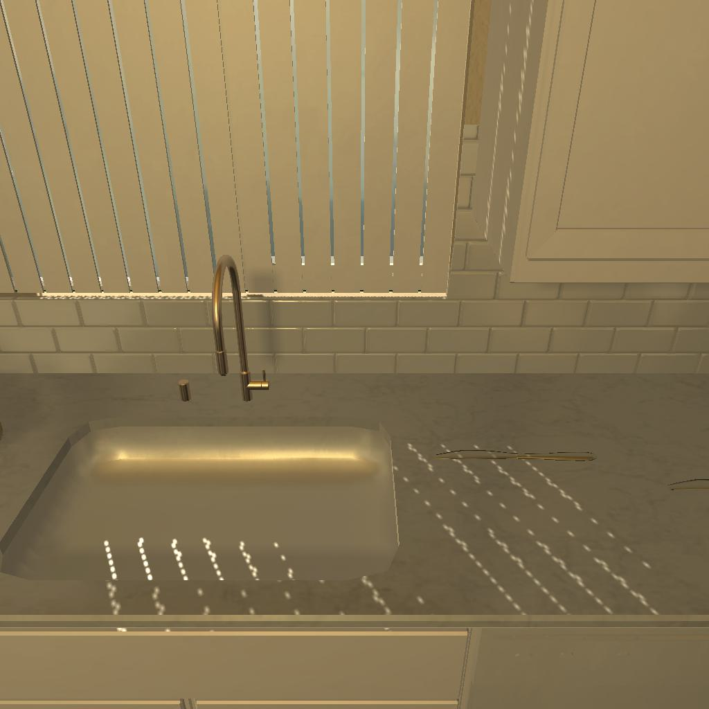
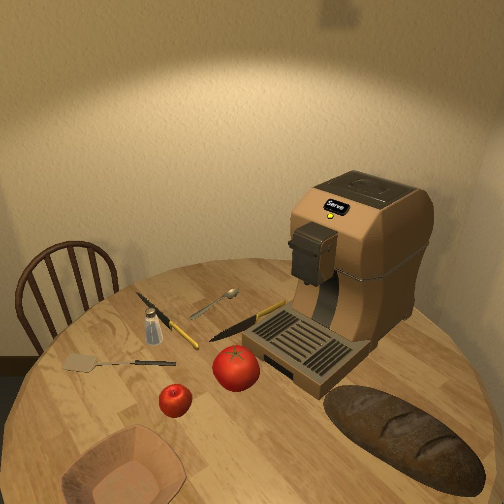

---------------------------------------------------------task: 10---------------------------------------------------------
--------------------------------------------------------------------------------------------------------------------------------------------------------------------
--------------------------------------------------------------------------------------------------------------------------------------------------------------------
Step:--------------------------------------------------------------------------7-------------------------------------------------------------------------------
----------------------------------------
VLM Prompt:
Image1:
Image2:
Image3:
**Instruction**
1. Analyze the provided images to identify all visible household objects and compare the difference between images (e.h. whether the object is opened or not and taken on hand or not), focusing on those relevant to the task description "clean some plate and put it in countertop."
2. Use the analysis of images and the task hint "The agent must find an object of the desired type, pick it up, go to a sink or a basin, clean the object with a sink or basin, and then find the correct location to place it and put it down there. The agent does not need to use soap bottle or faucet to clean the object, and the agent just needs to do action that is "clean the object with the sink or sink basin"." to answer the question: what is the most reasonable action in the choices for the task description "clean some plate and put it in countertop"?
3. Decide and write the answer using the template: The answer is: (i): , where i is the real number. If there is no desired object in images, search every place based on **Initial Observation** to find the object. And if no one is exactly correct, choose a similar answer.
**Initial Observation**
You are in the middle of a room. Looking quickly around you, you can see cabinet (1-20), toaster (1), microwave (1), garbagecan (1), countertop (1-2), drawer (1-4), stoveburner (1-4), sinkbasin (1), sink (1), fridge (1), diningtable (1), coffeemachine (1)
**Answer Choices**
(1): go to cabinet 1
(2): go to cabinet 2
(3): go to cabinet 3
(4): go to toaster 1
(5): go to cabinet 4
(6): go to cabinet 5
(7): go to microwave 1
(8): go to garbagecan 1
(9): go to countertop 1
(10): go to drawer 1
(11): go to cabinet 6
(12): go to cabinet 7
(13): go to drawer 2
(14): go to stoveburner 1
(15): go to stoveburner 2
(16): go to countertop 2
(17): go to cabinet 8
(18): go to cabinet 9
(19): go to cabinet 10
(20): go to drawer 3
(21): go to drawer 4
(22): go to stoveburner 3
(23): go to stoveburner 4
(24): go to cabinet 11
(25): go to cabinet 12
(26): go to cabinet 13
(27): go to cabinet 14
(28): go to cabinet 15
(29): go to fridge 1
(30): go to cabinet 16
(31): go to cabinet 17
(32): go to cabinet 18
(33): go to cabinet 19
(34): go to coffeemachine 1
(35): go to cabinet 20
(36): take bread 2 from diningtable 1
(37): take bowl 2 from diningtable 1
(38): take tomato 1 from diningtable 1
(39): take apple 1 from diningtable 1
(40): take spatul1 from diningtable 1
(41): take knife 1 from diningtable 1
(42): take peppershaker 1 from diningtable 1
(43): take knife 2 from diningtable 1
(44): take spoon 1 from diningtable 1
(45): examine diningtable 1
**Answer**
Let's think step by step by following the instructions.
----------------------------------------
----------------------------------------
Original Response:
First, we analyze the images provided:
Image1 and Image2 are identical and show a kitchen sink with a faucet. There are no plates or objects that need cleaning visible in these images.
Image3 shows a dining table with various objects such as a toaster, apples, a tomato, a knife, a spatula, a salt shaker, and a spoon. There is no plate visible on the dining table that needs cleaning.
Based on the initial observation, we know there are cabinets, drawers, and a countertop where plates could potentially be stored.
The task description "clean some plate and put it in countertop" suggests that we need to find a plate, clean it, and then place it on the countertop.
The hint provided indicates that we do not need to use a soap bottle or faucet for cleaning, and the action required is to "clean the object with the sink or sink basin."
Considering the information above, the most reasonable action for finding a plate would be to check the cabinets or drawers, as plates are typically stored in these locations in a household. Since there is no direct action to "find a plate," we will choose an action that involves going to a location where plates are likely stored.
The answer is: (1): go to cabinet 1.
----------------------------------------
----------------------------------------
>>> Refine Original VLM Response and Get Pure Action: go to cabinet 1
----------------------------------------
-----------------------------------------------------------------
Running time: 10.637890815734863 seconds
Total Money: 5.0507700000000035
-----------------------------------------------------------------
-----------------------------------------------------------------
Text Observation:You arrive at loc 0. The cabinet 1 is open. On the cabinet 1, you see nothing.
-----------------------------------------------------------------
UNSUCCEED